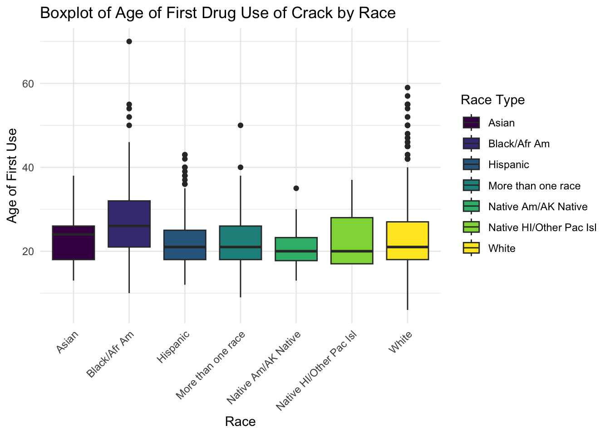

library(tidyverse)
library(broom)
library(ggplot2)
library(readr)
library(dplyr)
library(tigris)
library(ggthemes)
library(gt)
cleaned_data <- readRDS(here::here("dataset/cleaned_data_new.rds"))
counties_cleaned_METRO <- readRDS(here::here("dataset/metro_clean.rds"))Analysis
Here we provide a detailed analysis using more sophisticated statistics techniques.
Early Insights
Motivation for Data Analysis (DA)
Our motivation for engaging in Data Analysis of the NSDUH survey comes from our shared interest in finding out how drug use affects all areas of life in society. Understanding more about drug use is important because so much is unknown about drug use and being able to uncover certain relationships may be key in understanding and addressing drug use. For us we are super excited to explore such a huge dataset such as the NSDUH because we can take our time to explore the small key relationships between so many different variables throughout the dataset. Navigating through such a dataset took us a long time to find variables that we needed for analysis but it was perfect in the end because we were able to effectively show key relationships that help the general public understand more about drugs and their use.
Ultimately our goal is to provide key insights into how certain factors play a role in a person’s drug use even if they did a drug for one time. We were initially interested in finding out just about how race and drug use is affecting one another but we then soon realized that we also need to explore the factors for drug use and not just the relationship between the two. We then realized that a more holistic view of each factor into drug use would be more appropriate. These factors of income,and location can play a role in how drug use and race correlate and associate together.
Interested Variables
The variables we were highly interested in exploring is the relationship between drugs used and the race of the respondent in this survey. Being able to see the variables that factor into the relationship is important to understand how a person might be influenced to try and do drugs. The most important variables and factors help determine not only such a relationship of race and drug use but also the disparities between racial groups and drug use.
Going even further, we want to see what factors attribute to drug use in any way, that being income or location. These are important relationships to explore because it could provide insight into why or how someone could be introduced to drug use and what factors play a role. Some specific questions from the survey that play into our analysis are questions asking if a person has ever done such a drug and such a drug could be one of the 6 we are exploring which are cigarettes, marijuana, alcohol, cocaine, crack, heroine. Many factors could influence drug use such that two factors are reliant on each other. For example there could be relationships such that a young person with low income may or may not be more inclined to use drugs. These claims can only be made after such analysis of this dataset and its important to explore them. We aim to answer these questions and relationships below in the analysis.
Also at what age each person has done any of the respective substances and whether they continue to do those drugs or not. Income, age and location are also important factors when it comes to finding the factors as these can be associated with higher drug use or lower as well. We want to explore relationships like if you are younger will you be trying more drugs or will you try more drugs when you are older and how does the racial group aspect play a role. Age can also play along with income and location and it’s important to explore whether these factors intertwine with each other or are they stand alone. We aim to answer these questions and relationships below in the analysis.
Questions for Analysis
The key question we are trying to answer is firstly how does race affect the drug use of a person. Going further, how does location, age, and income factor into this relationship.
Analysis Portion
Necessary Libraries and Datasets
Below we start by first introducing the cleaned dataset and also the libraries that are needed to create plots and tables in a nice and aesthetically pleasing fashion.
Setting the Scene - Maps of How Respondents Are Aorted Across the US According to County Metro and Population Status
metro_map <- counties_cleaned_METRO |> filter(STUSPS != "AK", STUSPS != "HI", STUSPS != "MP", STUSPS != "AS", STUSPS != "PR", STUSPS != "GU", STUSPS != "VI") %>% ggplot() + geom_sf(aes(fill = metrostatus), alpha = 0.5) + scale_fill_viridis_c() + ggtitle("US Counties Colored by Metro Status") + labs(subtitle = "1 = Large Metro, 2 = Small Metro, 3 = Non-Metro, 0 = Unkown", fill = "Metro Status") + theme(plot.subtitle = element_text(size = 9))
metro_map
Initial Findings and Relationships - EDA
facet.labs <- c("Large Metro", "Small Metro", "Non-Metro")
names(facet.labs) <- c("1", "2", "3")
cleaned_data |>
filter(AL30EST < 85) |>
group_by(NEWRACE2, COUTYP4) |>
ggplot(aes(x = NEWRACE2, y = AL30EST)) + geom_col() + facet_wrap(vars(COUTYP4), labeller = labeller(COUTYP4 = facet.labs), scales = "free_y") + theme(axis.text.x = element_text(angle=90, size = 8)) + labs(title = "Alcohol Use by Race and County Metro Status", x = "Race Category", y = "Estimated Alcohol Use in Past 30 Days") + theme(axis.text.y = element_text(size = 8)) # need to change y axis text sizeProportion of Race to Try Drugs Based on Race
drug_use_with_race <- cleaned_data |>
select(NEWRACE2, cigever, cigage, mjever, mjage, alcever, alctry, cocever, cocage, crkever, crkage, herever, herage, income, COUTYP4) |>
mutate(drug_use = ifelse(cigever==1 | mjever==1 | alcever==1 | cocever==1 | crkever==1 | herever==1, 1, 0))
proportions_table <- drug_use_with_race |>
group_by(NEWRACE2) |>
summarize(percent_try_drugs = 100*(mean(drug_use)),
percent_do_not = 100 - percent_try_drugs) |>
pivot_longer(cols = starts_with("percent"), names_to = "Drug_Status", values_to = "Percentage")
# Create a bar plot
ggplot(proportions_table, aes(x = NEWRACE2, y = Percentage, fill = Drug_Status)) +
geom_bar(stat = "identity", position = "stack") +
labs(title = "Percentage of People Who Tried/Did Not Try Drugs by Race",
x = "Race",
y = "Percentage",
fill = "Drug Status")
Plots for Race and Age when First Tried and Drug Used
drug_race_age <- cleaned_data |>
select(NEWRACE2, cigever, cigage, mjever, mjage, alcever, alctry, cocever, cocage, crkever, crkage, herever, herage)
crack_data <- drug_race_age |>
filter(crkage < 86)
ggplot(crack_data, aes(x = NEWRACE2, y = crkage, fill = NEWRACE2)) +
geom_boxplot() +
labs(title = "Boxplot of Age of First Drug Use of Crack by Race",
x = "Race",
y = "Age of First Use",
fill = "Race Type") +
theme_minimal() +
theme(axis.text.x = element_text(angle = 45, hjust = 1)) 
her_data <- drug_race_age |>
filter(herage < 86)
ggplot(her_data, aes(x = NEWRACE2, y = herage, fill = NEWRACE2)) +
geom_boxplot() +
labs(title = "Boxplot of Age of First Drug Use of Heroine by Race",
x = "Race",
y = "Age of First Use",
fill = "Race Type") +
theme_minimal() +
theme(axis.text.x = element_text(angle = 45, hjust = 1)) 
Logisitic Regression Models
Important to note that the baselines/intercepts are the Asian Population
Substance Use with Race
# Model for the Substance Use vs Race
model_sub <- glm(drug_use ~ NEWRACE2, data = drug_use_with_race, family = "binomial")
tidy_output <- tidy(model_sub)|>
mutate(term = ifelse(term == "(Intercept)", "Asian", str_replace(term, "NEWRACE2", "")))
conf_intervals <- confint(model_sub)Waiting for profiling to be done...odds_ratios <- exp(coef(model_sub))
odds_ratios_df <- data.frame(
Odds_Ratio = odds_ratios
)
output_table <- cbind(tidy_output, conf_intervals,odds_ratios_df) |>
rename(Race = term) |>
select(-statistic,-std.error) |>
rownames_to_column(var = "RowNames") |>
select(-RowNames)
output <- output_table |>
gt() |>
as_raw_html()
output| Race | estimate | p.value | 2.5 % | 97.5 % | Odds_Ratio |
|---|---|---|---|---|---|
Substance Use with Race and Income as a Factor of Each Other
Same as before, we are gonna assume for the model here that the hypothesis is that there is no association between likelihood of trying drugs ever and race group as well as Income.
# Model for the Substance Use vs Race and Income
model_sub_income <- glm(drug_use ~ NEWRACE2*factor(income), data = drug_use_with_race, family = "binomial")
tidy_output_income <- tidy(model_sub_income)|>
mutate(term = ifelse(term == "(Intercept)", "Asian", str_replace(term, "NEWRACE2", "")))
conf_intervals_income <- confint(model_sub_income)Waiting for profiling to be done...odds_ratios_income <- exp(coef(model_sub_income))
output_table <- cbind(tidy_output_income,conf_intervals_income, odds_ratios_income) |>
select(-statistic,-std.error) |>
rownames_to_column(var = "RowNames") |>
select(-RowNames)
output <- output_table |>
gt() |>
as_raw_html()
output| term | estimate | p.value | 2.5 % | 97.5 % | odds_ratios_income |
|---|---|---|---|---|---|
Substance Use with Race and Location as a Factor of Each Other
# Model for the Substance Use vs Race and Location
model_sub_loc <- glm(drug_use ~ NEWRACE2*factor(COUTYP4), data = drug_use_with_race, family = "binomial")
tidy_output_loc <- tidy(model_sub_loc)|>
mutate(term = ifelse(term == "(Intercept)", "Asian", str_replace(term, "NEWRACE2", "")))
conf_intervals_loc <- confint(model_sub_loc)Waiting for profiling to be done...odds_ratios_loc <- exp(coef(model_sub_loc))
output_table <- cbind(tidy_output_loc,conf_intervals_loc, odds_ratios_loc) |>
select(-statistic,-std.error) |>
rownames_to_column(var = "RowNames") |>
select(-RowNames)
output <- output_table |>
gt() |>
as_raw_html()
output| term | estimate | p.value | 2.5 % | 97.5 % | odds_ratios_loc |
|---|---|---|---|---|---|
Conclusions
Concluding Statements
Limitations of Analysis
In our analysis of the data, there were a few limitations that we had to keep in mind. The first is that both when conducting and reading the analysis, remember that the results on substance use are based on respondent’s memories so that introduces error because people may have falsely reported their true substance use. Another source of error that we had to address was that the results of our plots were pretty skewed because the number of white respondents was much higher than the number of respondents of other race categories. This was falsely making it look like substance use was much higher for the white race category than it was for others. To address this, we tried using proportions instead.
Table for percentage of Race in Total
Attributions
In general, you should try to provide links to relevant resources, especially those that helped you. You don’t have to link to every StackOverflow post you used but if there are explainers on aspects of the data or specific models that you found helpful, try to link to those. Also, try to link to other sources that might support (or refute) your analysis. These can just be regular hyperlinks. You don’t need a formal citation.
If you are directly quoting from a source, please make that clear. You can show quotes using > like this
Rubric: On this page
You will
- Introduce what motivates your Data Analysis (DA)
- Which variables and relationships are you most interested in?
- What questions are you interested in answering?
- Provide context for the rest of the page. This will include figures/tables that illustrate aspects of the data of your question.
- Modeling and Inference
- The page will include some kind of formal statistical model. This could be a linear regression, logistic regression, or another modeling framework.
- Explain the techniques you used for validating your results.
- Describe the results of your modelling and make sure to give a sense of the uncertainty in your estimates and conclusions.
- Explain the flaws and limitations of your analysis
- Are there some assumptions that you needed to make that might not hold? Is there other data that would help to answer your questions?
- Clarity Figures
- Are your figures/tables/results easy to read, informative, without problems like overplotting, hard-to-read labels, etc?
- Each figure should provide a key insight. Too many figures or other data summaries can detract from this. (While not a hard limit, around 5 total figures is probably a good target.)
- Default
lmoutput and plots are typically not acceptable.
- Clarity of Explanations
- How well do you explain each figure/result?
- Do you provide interpretations that suggest further analysis or explanations for observed phenomenon?
- Organization and cleanliness.
- Make sure to remove excessive warnings, use clean easy-to-read code, organize with sections or multiple pages, use bullets, etc.
- This page should be self-contained.